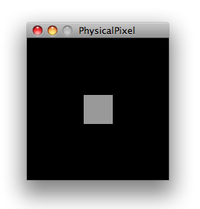

Learning Examples | Foundations | Hacking | Links
Examples > Communication
Physical Pixel
This example example uses the Arduino board to receive data from the computer. The Arduino boards turns on an LED when it receives the character 'H', and turns off the LED when it receives the character 'L'.
The data can be sent from the Arduino serial monitor, or another program like Processing (see code below), Flash (via a serial-net proxy), PD, or Max/MSP.
Hardware Required
- Arduino Board
- Analog Sensor (potentiometer, photocell, FSR, etc.)
Software Required
Circuit
Attach an LED to pin 13. The long leg, or anode, goes to pin 13. The short leg, or cathode, goes to ground. You can also use the built-in LED on most Arduino boards.
click the image to enlarge
image developed using Fritzing. For more circuit examples, see the Fritzing project page
Schematic
click the image to enlarge
Code
/*
Physical Pixel
An example of using the Arduino board to receive data from the
computer. In this case, the Arduino boards turns on an LED when
it receives the character 'H', and turns off the LED when it
receives the character 'L'.
The data can be sent from the Arduino serial monitor, or another
program like Processing (see code below), Flash (via a serial-net
proxy), PD, or Max/MSP.
The circuit:
* LED connected from digital pin 13 to ground
created 2006
by David A. Mellis
modified 30 Aug 2011
by Tom Igoe and Scott Fitzgerald
This example code is in the public domain.
http://www.arduino.cc/en/Tutorial/PhysicalPixel
*/
const int ledPin = 13; // the pin that the LED is attached to
int incomingByte; // a variable to read incoming serial data into
void setup() {
// initialize serial communication:
Serial.begin(9600);
// initialize the LED pin as an output:
pinMode(ledPin, OUTPUT);
}
void loop() {
// see if there's incoming serial data:
if (Serial.available() > 0) {
// read the oldest byte in the serial buffer:
incomingByte = Serial.read();
// if it's a capital H (ASCII 72), turn on the LED:
if (incomingByte == 'H') {
digitalWrite(ledPin, HIGH);
}
// if it's an L (ASCII 76) turn off the LED:
if (incomingByte == 'L') {
digitalWrite(ledPin, LOW);
}
}
}
/* Processing code for this example
// mouseover serial
// Demonstrates how to send data to the Arduino I/O board, in order to
// turn ON a light if the mouse is over a square and turn it off
// if the mouse is not.
// created 2003-4
// based on examples by Casey Reas and Hernando Barragan
// modified 30 Aug 2011
// by Tom Igoe
// This example code is in the public domain.
import processing.serial.*;
float boxX;
float boxY;
int boxSize = 20;
boolean mouseOverBox = false;
Serial port;
void setup() {
size(200, 200);
boxX = width/2.0;
boxY = height/2.0;
rectMode(RADIUS);
// List all the available serial ports in the output pane.
// You will need to choose the port that the Arduino board is
// connected to from this list. The first port in the list is
// port #0 and the third port in the list is port #2.
println(Serial.list());
// Open the port that the Arduino board is connected to (in this case #0)
// Make sure to open the port at the same speed Arduino is using (9600bps)
port = new Serial(this, Serial.list()[0], 9600);
}
void draw()
{
background(0);
// Test if the cursor is over the box
if (mouseX > boxX-boxSize && mouseX < boxX+boxSize &&
mouseY > boxY-boxSize && mouseY < boxY+boxSize) {
mouseOverBox = true;
// draw a line around the box and change its color:
stroke(255);
fill(153);
// send an 'H' to indicate mouse is over square:
port.write('H');
}
else {
// return the box to it's inactive state:
stroke(153);
fill(153);
// send an 'L' to turn the LED off:
port.write('L');
mouseOverBox = false;
}
// Draw the box
rect(boxX, boxY, boxSize, boxSize);
}
*/
/*
Max/MSP version 5 patch to run with this example:
----------begin_max5_patcher----------
1672.3oc2ZszaaiCD9ryuBBebQVCQRYao8xhf1cQCPVfBzh8RRQ.sDsM2HSZ
HQmlzh9eu7gjsjsEk7y0oWjiHoHm4aluYHGlueUmtiDuPy5B9Cv8fNc99Uc5
XZR2Pm726zcF4knDRlYXciDylQ4xtWa6SReQZZ+iSeMiEQR.ej8BM4A9C7OO
kkAlSjQSAYTdbFfvA27o2c6sfO.Doqd6NfXgDHmRUCKkolg4hT06BfbQJGH3
5Qd2e8d.QJIQSow5tzebZ7BFW.FIHow8.2JAQpVIIYByxo9KIMkSjL9D0BRT
sbGHZJIkDoZOSMuQT.8YZ5qpgGI3locF4IpQRzq2nDF+odZMIJkRjpEF44M3
A9nWAum7LKFbSOv+PSRXYOvmIhYiYpg.8A2LOUOxPyH+TjPJA+MS9sIzTRRr
QP9rXF31IBZAHpVHkHrfaPRHLuUCzoj9GSoQRqIB52y6Z.tu8o4EX+fddfuj
+MrXiwPL5+9cXwrOVvkbxLpomazHbQO7EyX7DpzXYgkFdF6algCQpkX4XUlo
hA6oa7GWck9w0Gnmy6RXQOoQeCfWwlzsdnHLTq8n9PCHLv7Cxa6PAN3RCKjh
ISRVZ+sSl704Tqt0kocE9R8J+P+RJOZ4ysp6gN0vppBbOTEN8qp0YCq5bq47
PUwfA5e766z7NbGMuncw7VgNRSyQhbnPMGrDsGaFSvKM5NcWoIVdZn44.eOi
9DTRUT.7jDQzSTiF4UzXLc7tLGh4T9pwaFQkGUGIiOOkpBSJUwGsBd40krHQ
9XEvwq2V6eLIhV6GuzP7uzzXBmzsXPSRYwBtVLp7s5lKVv6UN2VW7xRtYDbx
7s7wRgHYDI8YVFaTBshkP49R3rYpH3RlUhTQmK5jMadJyF3cYaTNQMGSyhRE
IIUlJaOOukdhoOyhnekEKmZlqU3UkLrk7bpPrpztKBVUR1uorLddk6xIOqNt
lBOroRrNVFJGLrDxudpET4kzkstNp2lzuUHVMgk5TDZx9GWumnoQTbhXsEtF
tzCcM+z0QKXsngCUtTOEIN0SX2iHTTIIz968.Kf.uhfzUCUuAd3UKd.OKt.N
HTynxTQyjpQD9jlwEXeKQxfHCBahUge6RprSa2V4m3aYOMyaP6gah2Yf1zbD
jVwZVGFZHHxINFxpjr5CiTS9JiZn6e6nTlXQZTAFj6QCppQwzL0AxVtoi6WE
QXsANkEGWMEuwNvhmKTnat7A9RqLq6pXuEwY6xM5xRraoTiurj51J1vKLzFs
CvM7HI14Mpje6YRxHOSieTsJpvJORjxT1nERK6s7YTN7sr6rylNwf5zMiHI4
meZ4rTYt2PpVettZERbjJ6PjfqN2loPSrUcusH01CegsGEE5467rnCdqT1ES
QxtCvFq.cvGz+BaAHXKzRSfP+2Jf.KCvj5ZLJRAhwi+SWHvPyN3vXiaPn6JR
3eoA.0TkFhTvpsDMIrL20nAkCI4EoYfSHAuiPBdmJRyd.IynYYjIzMvjOTKf
3DLvnvRLDLpWeEOYXMfAZqfQ0.qsnlUdmA33t8CNJ7MZEb.u7fiZHLYzDkJp
R7CqEVLGN75U+1JXxFUY.xEEBcRCqhOEkz2bENEWnh4pbh0wY25EefbD6EmW
UA6Ip8wFLyuFXx+Wrp8m6iff1B86W7bqJO9+mx8er4E3.abCLrYdA16sBuHx
vKT6BlpIGQIhL55W7oicf3ayv3ixQCm4aQuY1HZUPQWY+cASx2WZ3f1fICuz
vj5R5ZbM1y8gXYN4dIXaYGq4NhQvS5MmcDADy+S.j8CQ78vk7Q7gtPDX3kFh
3NGaAsYBUAO.8N1U4WKycxbQdrWxJdXd10gNIO+hkUMmm.CZwknu7JbNUYUq
0sOsTsI1QudDtjw0t+xZ85wWZd80tMCiiMADNX4UzrcSeK23su87IANqmA7j
tiRzoXi2YRh67ldAk79gPmTe3YKuoY0qdEDV3X8xylCJMTN45JIakB7uY8XW
uVr3PO8wWwEoTW8lsfraX7ZqzZDDXCRqNkztHsGCYpIDDAOqxDpMVUMKcOrp
942acPvx2NPocMC1wQZ8glRn3myTykVaEUNLoEeJjVaAevA4EAZnsNgkeyO+
3rEZB7f0DTazDcQTNmdt8aACGi1QOWnMmd+.6YjMHH19OB5gKsMF877x8wsJ
hN97JSnSfLUXGUoj6ujWXd6Pk1SAC+Pkogm.tZ.1lX1qL.pe6PE11DPeMMZ2
.P0K+3peBt3NskC
-----------end_max5_patcher-----------
*/
Processing Code
Copy the Processing code from the code sample above. As you mouse over the center square, the LED on pin 13 should turn on and off. The Processing applet looks like this:

Mouse over the square to turn the LED on and off.
Max patch
The Max/MSP patch looks like the image below. Copy it from the code sample above and paste it into a new patch window.
See Also:
{kind=link}
{kind=link}
{kind=link}